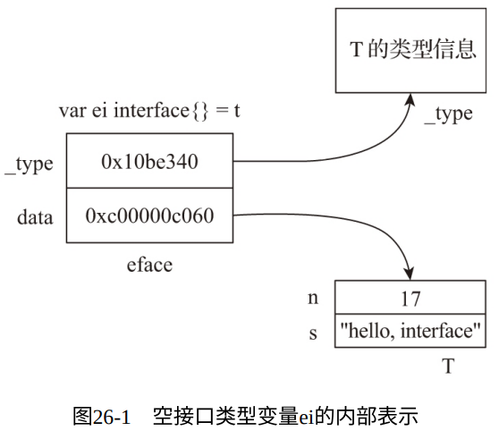
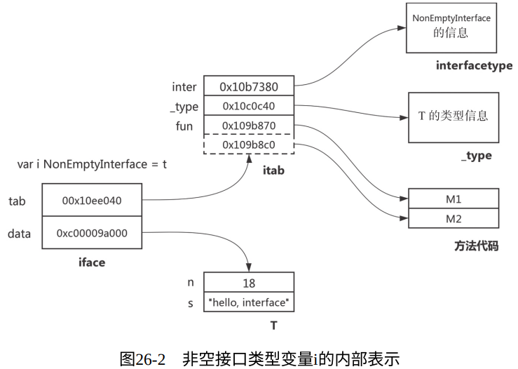

如果要从Go语言中挑选出一个语言特性放入其他语言，我会选择接口。
——Russ Cos，Go核心团队技术负责人
接口时Go这本静态类型语言中唯一“动静兼备”的语言特性。
- 接口的静态特性：
- 接口类型变量具有静态类型。
- 支持在编译阶段的类型检查。
- 接口的动态特性：
- 接口类型变量兼具动态类型，即在运行时存储在接口类型变量中的值的真实类型。
- 接口类型变量在程序运行时可以被赋值为不同的动态类型变量，从而支持运行时多态。
1. 接口类型变量的内部表示
我们可以在 $GOROOT/src/runtime/runtime2.go 中找到接口类型变量在运行时的表示：
// $GOROOT/src/runtime/runtime2.go
type iface struct {
tab *itab // 存储接口本身信息以及动态类型所实现的方法的信息
data unsafe.Pointer
}
type eface struct {
_type *_type // 指向该接口类型变量的动态类型信息
data unsafe.Pointer
}
// $GOROOT/src/runtime/type.go
type _type struct {
size uintptr
ptrdata uintptr
hash uint32
tflag tflag
align uint8
fieldalign uint8
kind uint8
alg *typeAlg
gcdata *byte
str nameOff
ptrToThis typeOff
}
// $GOROOT/src/runtime/runtime2.go
type itab struct {
inter *interfacetype // 该接口类型自身的信息
_type *_type // 该接口类型变量的动态类型的信息
hash uint32
_ [4]byte
fun [1]uintptr // 动态类型已实现的接口方法的调用地址数组
}
// $GOROOT/src/runtime/type.go
type interfacetype struct {
typ _type // 类型信息
pkgpath name // 包路径名
mhdr []imethod // 接口方法集合切片
}
在运行时层面，接口类型变量有两种内部表示——eface和iface
- eface：用于表示没有方法的空接口（empty interface）类型变量， 即interface{}类型的变量。
- iface：用于表示其余拥有方法的接口（interface）类型变量。
例子：
type T struct {
n int
s string
}
func main() {
var t = T {
n: 17,
s: "hello, interface",
}
var ei interface{} = t // Go运⾏时使⽤eface结构表⽰ei
}

type T struct {
n int
s string
}
func (T) M1() {}
func (T) M2() {}
type NonEmptyInterface interface {
M1()
M2()
}
func main() {
var t = T{
n: 18,
s: "hello, interface",
}
var i NonEmptyInterface = t
}

2. 输出接口类型变量内部表示的详细信息
(略)
3. 接口类型的装箱原理
- 装箱：是编程语言领域的一个基础概念，一般是指把值类型转换成引用类型。
- 在Go语言中，将任意类型赋值给一个接口类型变量都是装箱操作。 因此接口类型的装箱实则是创建一个 eface 或 iface 的过程。
例子：
// chapter5/sources/interface-internal-4.go
type T struct {
n int
s string
}
func (T) M1() {}
func (T) M2() {}
type NonEmptyInterface interface {
M1()
M2()
}
func main() {
var t = T{
n: 17,
s: "hello, interface",
}
var ei interface{}
ei = t
var i NonEmptyInterface
i = t
fmt.Println(ei)
fmt.Println(i)
}
对应汇编代码如下：
$go tool compile -S interface-internal-4.go > interfaceinternal-4.s
// interface-internal-4.s
// 对应ei = t一⾏的汇编如下
...
0x00b6 00182 (interface-internal-4.go:24) PCDATA $0, $1
0x00b6 00182 (interface-internal-4.go:24) PCDATA $1, $1
0x00b6 00182 (interface-internal-4.go:24) LEAQ
""..autotmp_15+408(SP), AX
0x00be 00190 (interface-internal-4.go:24) PCDATA $0, $0
0x00be 00190 (interface-internal-4.go:24) MOVQ AX,
8(SP)
0x00c3 00195 (interface-internal-4.go:24) CALL
runtime.convT2E(SB)
...
// 对应i = t一⾏的汇编如下
0x0128 00296 (interface-internal-4.go:27) PCDATA $0, $1
0x0128 00296 (interface-internal-4.go:27) PCDATA $1, $4
0x0128 00296 (interface-internal-4.go:27) LEAQ
""..autotmp_15+408(SP), AX
0x0130 00304 (interface-internal-4.go:27) PCDATA $0, $0
0x0130 00304 (interface-internal-4.go:27) MOVQ AX,
8(SP)
0x0135 00309 (interface-internal-4.go:27) CALL
runtime.convT2I(SB)
...
汇编代码中有 convT2E 和 convT2I 两个runtime包的函数，其源代码如下：
// $GOROOT/src/runtime/iface.go
func convT2E(t *_type, elem unsafe.Pointer) (e eface) {
if raceenabled {
raceReadObjectPC(t, elem, getcallerpc(), funcPC(convT2E))
}
if msanenabled {
msanread(elem, t.size)
}
x := mallocgc(t.size, t, true)
typedmemmove(t, x, elem)
e._type = t
e.data = x
return
}
func convT2I(tab *itab, elem unsafe.Pointer) (i iface) {
t := tab._type
if raceenabled {
raceReadObjectPC(t, elem, getcallerpc(), funcPC(convT2I))
}
if msanenabled {
msanread(elem, t.size)
}
x := mallocgc(t.size, t, true)
typedmemmove(t, x, elem)
i.tab = tab
i.data = x
return
}
- convT2E 用于将任意类型转换为一个eface
- convT2I 用于将任意类型转换为一个iface